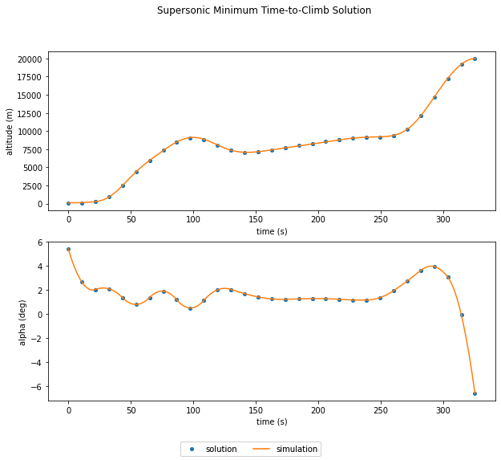

Supersonic Interceptor Minimum Time Climb
Contents
Supersonic Interceptor Minimum Time Climb#
This example is based on the A/C Min Time to Climb example given in chapter 4 of Bryson [Bry99]. It finds the angle-of-attack history required to accelerate a supersonic interceptor from near ground level, Mach 0.4 to an altitude of 20 km and Mach 1.0.

The vehicle dynamics are given by
(62)#\[\begin{align}
\frac{dv}{dt} &= \frac{T}{m} \cos \alpha - \frac{D}{m} - g \sin \gamma \\
\frac{d\gamma}{dt} &= \frac{T}{m v} \sin \alpha + \frac{L}{m v} - \frac{g \cos \gamma}{v} \\
\frac{dh}{dt} &= v \sin \gamma \\
\frac{dr}{dt} &= v \cos \gamma \\
\frac{dm}{dt} &= - \frac{T}{g I_{sp}}
\end{align}\]
The initial conditions are
(63)#\[\begin{align}
r_0 &= 0 \rm{\,m} \\
h_0 &= 100 \rm{\,m} \\
v_0 &= 135.964 \rm{\,m/s} \\
\gamma_0 &= 0 \rm{\,deg} \\
m_0 &= 19030.468 \rm{\,kg}
\end{align}\]
and the final conditions are
(64)#\[\begin{align}
h_f &= 20000 \rm{\,m} \\
M_f &= 1.0 \\
\gamma_0 &= 0 \rm{\,deg}
\end{align}\]
The ODE System: min_time_climb_ode.py#
The top level ODE definition is a Group that connects several subsystems.
import openmdao.api as om
from .dynamic_pressure_comp_partial_coloring import DynamicPressureCompFD
from ..aero.dynamic_pressure_comp import DynamicPressureComp
from ..aero.lift_drag_force_comp import LiftDragForceComp
from ..aero.cd0_comp import CD0Comp
from ..aero.kappa_comp import KappaComp
from ..aero.cla_comp import CLaComp
from ..aero.cl_comp import CLComp
from ..aero.cd_comp import CDComp
from ..aero.mach_comp import MachComp
class AeroGroup(om.Group):
"""
The purpose of the AeroGroup is to compute the aerodynamic forces on the
aircraft in the body frame.
Parameters
----------
v : float
air-relative velocity (m/s)
sos : float
local speed of sound (m/s)
rho : float
atmospheric density (kg/m**3)
alpha : float
angle of attack (rad)
S : float
aerodynamic reference area (m**2)
"""
def initialize(self):
self.options.declare('num_nodes', types=int,
desc='Number of nodes to be evaluated in the RHS')
self.options.declare('fd', types=bool, default=False, desc='If True, use fd for partials for dynamic pressure')
self.options.declare('partial_coloring', types=bool, default=False,
desc='If True and fd is True, color the approximated partials of dynamic pressure')
def setup(self):
nn = self.options['num_nodes']
if self.options['fd']:
q_comp = DynamicPressureCompFD(num_nodes=nn, partial_coloring=self.options['partial_coloring'])
else:
q_comp = DynamicPressureComp(num_nodes=nn)
self.add_subsystem(name='mach_comp',
subsys=MachComp(num_nodes=nn),
promotes_inputs=['v', 'sos'],
promotes_outputs=['mach'])
self.add_subsystem(name='cd0_comp',
subsys=CD0Comp(num_nodes=nn),
promotes_inputs=['mach'],
promotes_outputs=['CD0'])
self.add_subsystem(name='kappa_comp',
subsys=KappaComp(num_nodes=nn),
promotes_inputs=['mach'],
promotes_outputs=['kappa'])
self.add_subsystem(name='cla_comp',
subsys=CLaComp(num_nodes=nn),
promotes_inputs=['mach'],
promotes_outputs=['CLa'])
self.add_subsystem(name='CL_comp',
subsys=CLComp(num_nodes=nn),
promotes_inputs=['alpha', 'CLa'],
promotes_outputs=['CL'])
self.add_subsystem(name='CD_comp',
subsys=CDComp(num_nodes=nn),
promotes_inputs=['CD0', 'alpha', 'CLa', 'kappa'],
promotes_outputs=['CD'])
self.add_subsystem(name='q_comp',
subsys=q_comp,
promotes_inputs=['rho', 'v'],
promotes_outputs=['q'])
self.add_subsystem(name='lift_drag_force_comp',
subsys=LiftDragForceComp(num_nodes=nn),
promotes_inputs=['CL', 'CD', 'q', 'S'],
promotes_outputs=['f_lift', 'f_drag'])
import openmdao.api as om
from dymos.models.eom import FlightPathEOM2D
from dymos.examples.min_time_climb.prop import PropGroup
from dymos.models.atmosphere import USatm1976Comp
from dymos.examples.min_time_climb.doc.aero_partial_coloring import AeroGroup
class MinTimeClimbODE(om.Group):
def initialize(self):
self.options.declare('num_nodes', types=int)
self.options.declare('fd', types=bool, default=False, desc='If True, use fd for partials')
self.options.declare('partial_coloring', types=bool, default=False,
desc='If True and fd is True, color the approximated partials')
def setup(self):
nn = self.options['num_nodes']
self.add_subsystem(name='atmos',
subsys=USatm1976Comp(num_nodes=nn, h_def='geodetic'),
promotes_inputs=['h'])
self.add_subsystem(name='aero',
subsys=AeroGroup(num_nodes=nn,
fd=self.options['fd'],
partial_coloring=self.options['partial_coloring']),
promotes_inputs=['v', 'alpha', 'S'])
self.connect('atmos.sos', 'aero.sos')
self.connect('atmos.rho', 'aero.rho')
self.add_subsystem(name='prop',
subsys=PropGroup(num_nodes=nn),
promotes_inputs=['h', 'Isp', 'throttle'])
self.connect('aero.mach', 'prop.mach')
self.add_subsystem(name='flight_dynamics',
subsys=FlightPathEOM2D(num_nodes=nn),
promotes_inputs=['m', 'v', 'gam', 'alpha'])
self.connect('aero.f_drag', 'flight_dynamics.D')
self.connect('aero.f_lift', 'flight_dynamics.L')
self.connect('prop.thrust', 'flight_dynamics.T')
Building and running the problem#
In the following code we follow the following process to solve the problem:
import matplotlib.pyplot as plt
import openmdao.api as om
import dymos as dm
from dymos.examples.plotting import plot_results
#
# Instantiate the problem and configure the optimization driver
#
p = om.Problem(model=om.Group())
p.driver = om.pyOptSparseDriver()
p.driver.options['optimizer'] = 'SLSQP'
p.driver.declare_coloring()
#
# Instantiate the trajectory and phase
#
traj = dm.Trajectory()
phase = dm.Phase(ode_class=MinTimeClimbODE,
transcription=dm.GaussLobatto(num_segments=15, compressed=False))
traj.add_phase('phase0', phase)
p.model.add_subsystem('traj', traj)
#
# Set the options on the optimization variables
# Note the use of explicit state units here since much of the ODE uses imperial units
# and we prefer to solve this problem using metric units.
#
phase.set_time_options(fix_initial=True, duration_bounds=(50, 400),
duration_ref=100.0)
phase.add_state('r', fix_initial=True, lower=0, upper=1.0E6, units='m',
ref=1.0E3, defect_ref=1.0E3,
rate_source='flight_dynamics.r_dot')
phase.add_state('h', fix_initial=True, lower=0, upper=20000.0, units='m',
ref=1.0E2, defect_ref=1.0E2,
rate_source='flight_dynamics.h_dot')
phase.add_state('v', fix_initial=True, lower=10.0, units='m/s',
ref=1.0E2, defect_ref=1.0E2,
rate_source='flight_dynamics.v_dot')
phase.add_state('gam', fix_initial=True, lower=-1.5, upper=1.5, units='rad',
ref=1.0, defect_ref=1.0,
rate_source='flight_dynamics.gam_dot')
phase.add_state('m', fix_initial=True, lower=10.0, upper=1.0E5, units='kg',
ref=1.0E3, defect_ref=1.0E3,
rate_source='prop.m_dot')
phase.add_control('alpha', units='deg', lower=-8.0, upper=8.0, scaler=1.0,
rate_continuity=True, rate_continuity_scaler=100.0,
rate2_continuity=False)
phase.add_parameter('S', val=49.2386, units='m**2', opt=False, targets=['S'])
phase.add_parameter('Isp', val=1600.0, units='s', opt=False, targets=['Isp'])
phase.add_parameter('throttle', val=1.0, opt=False, targets=['throttle'])
#
# Setup the boundary and path constraints
#
phase.add_boundary_constraint('h', loc='final', equals=20000, scaler=1.0E-3)
phase.add_boundary_constraint('aero.mach', loc='final', equals=1.0)
phase.add_boundary_constraint('gam', loc='final', equals=0.0)
phase.add_path_constraint(name='h', lower=100.0, upper=20000, ref=20000)
phase.add_path_constraint(name='aero.mach', lower=0.1, upper=1.8)
# Minimize time at the end of the phase
phase.add_objective('time', loc='final', ref=1.0)
p.model.linear_solver = om.DirectSolver()
#
# Setup the problem and set the initial guess
#
p.setup(check=True)
p['traj.phase0.t_initial'] = 0.0
p['traj.phase0.t_duration'] = 500
p.set_val('traj.phase0.states:r', phase.interp('r', [0.0, 50000.0]))
p.set_val('traj.phase0.states:h', phase.interp('h', [100.0, 20000.0]))
p.set_val('traj.phase0.states:v', phase.interp('v', [135.964, 283.159]))
p.set_val('traj.phase0.states:gam', phase.interp('gam', [0.0, 0.0]))
p.set_val('traj.phase0.states:m', phase.interp('m', [19030.468, 10000.]))
p.set_val('traj.phase0.controls:alpha', phase.interp('alpha', [0.0, 0.0]))
#
# Solve for the optimal trajectory
#
dm.run_problem(p, simulate=True)
--- Constraint Report [traj] ---
--- phase0 ---
[final] 2.0000e+04 == h [m]
[final] 1.0000e+00 == aero.mach [None]
[final] 0.0000e+00 == gam [rad]
[path] 1.0000e+02 <= h <= 2.0000e+04 [m]
[path] 1.0000e-01 <= aero.mach <= 1.8000e+00 [None]
INFO: checking out_of_order
INFO:check_config:checking out_of_order
INFO: checking system
INFO:check_config:checking system
INFO: checking solvers
INFO:check_config:checking solvers
INFO: checking dup_inputs
INFO:check_config:checking dup_inputs
INFO: checking missing_recorders
INFO:check_config:checking missing_recorders
WARNING: The Problem has no recorder of any kind attached
WARNING:check_config:The Problem has no recorder of any kind attached
INFO: checking unserializable_options
INFO:check_config:checking unserializable_options
INFO: checking comp_has_no_outputs
INFO:check_config:checking comp_has_no_outputs
INFO: checking auto_ivc_warnings
INFO:check_config:checking auto_ivc_warnings
Model viewer data has already been recorded for Driver.
INFO: checking out_of_order
INFO:check_config:checking out_of_order
INFO: checking system
INFO:check_config:checking system
INFO: checking solvers
INFO:check_config:checking solvers
INFO: checking dup_inputs
INFO:check_config:checking dup_inputs
INFO: checking missing_recorders
INFO:check_config:checking missing_recorders
WARNING: The Problem has no recorder of any kind attached
WARNING:check_config:The Problem has no recorder of any kind attached
INFO: checking unserializable_options
INFO:check_config:checking unserializable_options
INFO: checking comp_has_no_outputs
INFO:check_config:checking comp_has_no_outputs
INFO: checking auto_ivc_warnings
INFO:check_config:checking auto_ivc_warnings
/usr/share/miniconda/envs/test/lib/python3.10/site-packages/openmdao/core/driver.py:469: DriverWarning:The following design variable initial conditions are out of their specified bounds:
traj.phases.phase0.time_extents.t_duration
val: [500.]
lower: 50.0
upper: 400.0
Set the initial value of the design variable to a valid value or set the driver option['invalid_desvar_behavior'] to 'ignore'.
This warning will become an error by default in OpenMDAO version 3.25.
Full total jacobian was computed 3 times, taking 0.163865 seconds.
Total jacobian shape: (181, 191)
Jacobian shape: (181, 191) ( 8.79% nonzero)
FWD solves: 25 REV solves: 0
Total colors vs. total size: 25 vs 191 (86.9% improvement)
Sparsity computed using tolerance: 1e-25
Time to compute sparsity: 0.163865 sec.
Time to compute coloring: 0.200158 sec.
Memory to compute coloring: 1.769531 MB.
/usr/share/miniconda/envs/test/lib/python3.10/site-packages/openmdao/core/total_jac.py:1626: DerivativesWarning:Constraints or objectives [('traj.phases.phase0.timeseries.timeseries_comp.states:h', inds=[(0, 0)]), ('traj.phases.phase0.timeseries.timeseries_comp.mach', inds=[(0, 0)])] cannot be impacted by the design variables of the problem.
Optimization Problem -- Optimization using pyOpt_sparse
================================================================================
Objective Function: _objfunc
Solution:
--------------------------------------------------------------------------------
Total Time: 9.5032
User Objective Time : 1.4075
User Sensitivity Time : 1.6261
Interface Time : 2.3560
Opt Solver Time: 4.1136
Calls to Objective Function : 131
Calls to Sens Function : 108
Objectives
Index Name Value
0 traj.phases.phase0.time.t 3.252582E+02
Variables (c - continuous, i - integer, d - discrete)
Index Name Type Lower Bound Value Upper Bound Status
0 traj.phases.phase0.time_extents.t_duration_0 c 5.000000E-01 3.252582E+00 4.000000E+00
1 traj.phases.phase0.indep_states.states:r_0 c 0.000000E+00 4.337701E+00 1.000000E+03
2 traj.phases.phase0.indep_states.states:r_1 c 0.000000E+00 4.337701E+00 1.000000E+03
3 traj.phases.phase0.indep_states.states:r_2 c 0.000000E+00 1.031226E+01 1.000000E+03
4 traj.phases.phase0.indep_states.states:r_3 c 0.000000E+00 1.031226E+01 1.000000E+03
5 traj.phases.phase0.indep_states.states:r_4 c 0.000000E+00 1.587301E+01 1.000000E+03
6 traj.phases.phase0.indep_states.states:r_5 c 0.000000E+00 1.587301E+01 1.000000E+03
7 traj.phases.phase0.indep_states.states:r_6 c 0.000000E+00 2.161347E+01 1.000000E+03
8 traj.phases.phase0.indep_states.states:r_7 c 0.000000E+00 2.161347E+01 1.000000E+03
9 traj.phases.phase0.indep_states.states:r_8 c 0.000000E+00 2.800905E+01 1.000000E+03
10 traj.phases.phase0.indep_states.states:r_9 c 0.000000E+00 2.800905E+01 1.000000E+03
11 traj.phases.phase0.indep_states.states:r_10 c 0.000000E+00 3.569474E+01 1.000000E+03
12 traj.phases.phase0.indep_states.states:r_11 c 0.000000E+00 3.569474E+01 1.000000E+03
13 traj.phases.phase0.indep_states.states:r_12 c 0.000000E+00 4.461505E+01 1.000000E+03
14 traj.phases.phase0.indep_states.states:r_13 c 0.000000E+00 4.461505E+01 1.000000E+03
15 traj.phases.phase0.indep_states.states:r_14 c 0.000000E+00 5.396432E+01 1.000000E+03
16 traj.phases.phase0.indep_states.states:r_15 c 0.000000E+00 5.396432E+01 1.000000E+03
17 traj.phases.phase0.indep_states.states:r_16 c 0.000000E+00 6.365832E+01 1.000000E+03
18 traj.phases.phase0.indep_states.states:r_17 c 0.000000E+00 6.365832E+01 1.000000E+03
19 traj.phases.phase0.indep_states.states:r_18 c 0.000000E+00 7.372149E+01 1.000000E+03
20 traj.phases.phase0.indep_states.states:r_19 c 0.000000E+00 7.372149E+01 1.000000E+03
21 traj.phases.phase0.indep_states.states:r_20 c 0.000000E+00 8.422514E+01 1.000000E+03
22 traj.phases.phase0.indep_states.states:r_21 c 0.000000E+00 8.422514E+01 1.000000E+03
23 traj.phases.phase0.indep_states.states:r_22 c 0.000000E+00 9.527718E+01 1.000000E+03
24 traj.phases.phase0.indep_states.states:r_23 c 0.000000E+00 9.527718E+01 1.000000E+03
25 traj.phases.phase0.indep_states.states:r_24 c 0.000000E+00 1.058978E+02 1.000000E+03
26 traj.phases.phase0.indep_states.states:r_25 c 0.000000E+00 1.058978E+02 1.000000E+03
27 traj.phases.phase0.indep_states.states:r_26 c 0.000000E+00 1.136083E+02 1.000000E+03
28 traj.phases.phase0.indep_states.states:r_27 c 0.000000E+00 1.136083E+02 1.000000E+03
29 traj.phases.phase0.indep_states.states:r_28 c 0.000000E+00 1.199394E+02 1.000000E+03
30 traj.phases.phase0.indep_states.states:h_0 c 0.000000E+00 2.446232E+00 2.000000E+02
31 traj.phases.phase0.indep_states.states:h_1 c 0.000000E+00 2.446232E+00 2.000000E+02
32 traj.phases.phase0.indep_states.states:h_2 c 0.000000E+00 2.523425E+01 2.000000E+02
33 traj.phases.phase0.indep_states.states:h_3 c 0.000000E+00 2.523425E+01 2.000000E+02
34 traj.phases.phase0.indep_states.states:h_4 c 0.000000E+00 5.979155E+01 2.000000E+02
35 traj.phases.phase0.indep_states.states:h_5 c 0.000000E+00 5.979155E+01 2.000000E+02
36 traj.phases.phase0.indep_states.states:h_6 c 0.000000E+00 8.468632E+01 2.000000E+02
37 traj.phases.phase0.indep_states.states:h_7 c 0.000000E+00 8.468632E+01 2.000000E+02
38 traj.phases.phase0.indep_states.states:h_8 c 0.000000E+00 8.839941E+01 2.000000E+02
39 traj.phases.phase0.indep_states.states:h_9 c 0.000000E+00 8.839941E+01 2.000000E+02
40 traj.phases.phase0.indep_states.states:h_10 c 0.000000E+00 7.334356E+01 2.000000E+02
41 traj.phases.phase0.indep_states.states:h_11 c 0.000000E+00 7.334356E+01 2.000000E+02
42 traj.phases.phase0.indep_states.states:h_12 c 0.000000E+00 7.147458E+01 2.000000E+02
43 traj.phases.phase0.indep_states.states:h_13 c 0.000000E+00 7.147458E+01 2.000000E+02
44 traj.phases.phase0.indep_states.states:h_14 c 0.000000E+00 7.715270E+01 2.000000E+02
45 traj.phases.phase0.indep_states.states:h_15 c 0.000000E+00 7.715270E+01 2.000000E+02
46 traj.phases.phase0.indep_states.states:h_16 c 0.000000E+00 8.262303E+01 2.000000E+02
47 traj.phases.phase0.indep_states.states:h_17 c 0.000000E+00 8.262303E+01 2.000000E+02
48 traj.phases.phase0.indep_states.states:h_18 c 0.000000E+00 8.815355E+01 2.000000E+02
49 traj.phases.phase0.indep_states.states:h_19 c 0.000000E+00 8.815355E+01 2.000000E+02
50 traj.phases.phase0.indep_states.states:h_20 c 0.000000E+00 9.138943E+01 2.000000E+02
51 traj.phases.phase0.indep_states.states:h_21 c 0.000000E+00 9.138943E+01 2.000000E+02
52 traj.phases.phase0.indep_states.states:h_22 c 0.000000E+00 9.362154E+01 2.000000E+02
53 traj.phases.phase0.indep_states.states:h_23 c 0.000000E+00 9.362154E+01 2.000000E+02
54 traj.phases.phase0.indep_states.states:h_24 c 0.000000E+00 1.207562E+02 2.000000E+02
55 traj.phases.phase0.indep_states.states:h_25 c 0.000000E+00 1.207562E+02 2.000000E+02
56 traj.phases.phase0.indep_states.states:h_26 c 0.000000E+00 1.726212E+02 2.000000E+02
57 traj.phases.phase0.indep_states.states:h_27 c 0.000000E+00 1.726212E+02 2.000000E+02
58 traj.phases.phase0.indep_states.states:h_28 c 0.000000E+00 2.000000E+02 2.000000E+02 u
59 traj.phases.phase0.indep_states.states:v_0 c 1.000000E-01 2.633872E+00 1.000000E+19
60 traj.phases.phase0.indep_states.states:v_1 c 1.000000E-01 2.633872E+00 1.000000E+19
61 traj.phases.phase0.indep_states.states:v_2 c 1.000000E-01 3.104846E+00 1.000000E+19
62 traj.phases.phase0.indep_states.states:v_3 c 1.000000E-01 3.104846E+00 1.000000E+19
63 traj.phases.phase0.indep_states.states:v_4 c 1.000000E-01 2.949267E+00 1.000000E+19
64 traj.phases.phase0.indep_states.states:v_5 c 1.000000E-01 2.949267E+00 1.000000E+19
65 traj.phases.phase0.indep_states.states:v_6 c 1.000000E-01 2.842952E+00 1.000000E+19
66 traj.phases.phase0.indep_states.states:v_7 c 1.000000E-01 2.842952E+00 1.000000E+19
67 traj.phases.phase0.indep_states.states:v_8 c 1.000000E-01 3.249032E+00 1.000000E+19
68 traj.phases.phase0.indep_states.states:v_9 c 1.000000E-01 3.249032E+00 1.000000E+19
69 traj.phases.phase0.indep_states.states:v_10 c 1.000000E-01 3.941138E+00 1.000000E+19
70 traj.phases.phase0.indep_states.states:v_11 c 1.000000E-01 3.941138E+00 1.000000E+19
71 traj.phases.phase0.indep_states.states:v_12 c 1.000000E-01 4.243012E+00 1.000000E+19
72 traj.phases.phase0.indep_states.states:v_13 c 1.000000E-01 4.243012E+00 1.000000E+19
73 traj.phases.phase0.indep_states.states:v_14 c 1.000000E-01 4.394793E+00 1.000000E+19
74 traj.phases.phase0.indep_states.states:v_15 c 1.000000E-01 4.394793E+00 1.000000E+19
75 traj.phases.phase0.indep_states.states:v_16 c 1.000000E-01 4.562262E+00 1.000000E+19
76 traj.phases.phase0.indep_states.states:v_17 c 1.000000E-01 4.562262E+00 1.000000E+19
77 traj.phases.phase0.indep_states.states:v_18 c 1.000000E-01 4.737102E+00 1.000000E+19
78 traj.phases.phase0.indep_states.states:v_19 c 1.000000E-01 4.737102E+00 1.000000E+19
79 traj.phases.phase0.indep_states.states:v_20 c 1.000000E-01 4.969617E+00 1.000000E+19
80 traj.phases.phase0.indep_states.states:v_21 c 1.000000E-01 4.969617E+00 1.000000E+19
81 traj.phases.phase0.indep_states.states:v_22 c 1.000000E-01 5.193973E+00 1.000000E+19
82 traj.phases.phase0.indep_states.states:v_23 c 1.000000E-01 5.193973E+00 1.000000E+19
83 traj.phases.phase0.indep_states.states:v_24 c 1.000000E-01 4.826574E+00 1.000000E+19
84 traj.phases.phase0.indep_states.states:v_25 c 1.000000E-01 4.826574E+00 1.000000E+19
85 traj.phases.phase0.indep_states.states:v_26 c 1.000000E-01 3.708828E+00 1.000000E+19
86 traj.phases.phase0.indep_states.states:v_27 c 1.000000E-01 3.708828E+00 1.000000E+19
87 traj.phases.phase0.indep_states.states:v_28 c 1.000000E-01 2.950719E+00 1.000000E+19
88 traj.phases.phase0.indep_states.states:gam_0 c -1.500000E+00 1.014639E-01 1.500000E+00
89 traj.phases.phase0.indep_states.states:gam_1 c -1.500000E+00 1.014639E-01 1.500000E+00
90 traj.phases.phase0.indep_states.states:gam_2 c -1.500000E+00 5.977726E-01 1.500000E+00
91 traj.phases.phase0.indep_states.states:gam_3 c -1.500000E+00 5.977726E-01 1.500000E+00
92 traj.phases.phase0.indep_states.states:gam_4 c -1.500000E+00 4.558137E-01 1.500000E+00
93 traj.phases.phase0.indep_states.states:gam_5 c -1.500000E+00 4.558137E-01 1.500000E+00
94 traj.phases.phase0.indep_states.states:gam_6 c -1.500000E+00 3.189616E-01 1.500000E+00
95 traj.phases.phase0.indep_states.states:gam_7 c -1.500000E+00 3.189616E-01 1.500000E+00
96 traj.phases.phase0.indep_states.states:gam_8 c -1.500000E+00 -1.774494E-01 1.500000E+00
97 traj.phases.phase0.indep_states.states:gam_9 c -1.500000E+00 -1.774494E-01 1.500000E+00
98 traj.phases.phase0.indep_states.states:gam_10 c -1.500000E+00 -1.196089E-01 1.500000E+00
99 traj.phases.phase0.indep_states.states:gam_11 c -1.500000E+00 -1.196089E-01 1.500000E+00
100 traj.phases.phase0.indep_states.states:gam_12 c -1.500000E+00 4.700158E-02 1.500000E+00
101 traj.phases.phase0.indep_states.states:gam_13 c -1.500000E+00 4.700158E-02 1.500000E+00
102 traj.phases.phase0.indep_states.states:gam_14 c -1.500000E+00 5.968499E-02 1.500000E+00
103 traj.phases.phase0.indep_states.states:gam_15 c -1.500000E+00 5.968499E-02 1.500000E+00
104 traj.phases.phase0.indep_states.states:gam_16 c -1.500000E+00 5.570414E-02 1.500000E+00
105 traj.phases.phase0.indep_states.states:gam_17 c -1.500000E+00 5.570414E-02 1.500000E+00
106 traj.phases.phase0.indep_states.states:gam_18 c -1.500000E+00 4.944531E-02 1.500000E+00
107 traj.phases.phase0.indep_states.states:gam_19 c -1.500000E+00 4.944531E-02 1.500000E+00
108 traj.phases.phase0.indep_states.states:gam_20 c -1.500000E+00 1.063244E-02 1.500000E+00
109 traj.phases.phase0.indep_states.states:gam_21 c -1.500000E+00 1.063244E-02 1.500000E+00
110 traj.phases.phase0.indep_states.states:gam_22 c -1.500000E+00 7.512639E-02 1.500000E+00
111 traj.phases.phase0.indep_states.states:gam_23 c -1.500000E+00 7.512639E-02 1.500000E+00
112 traj.phases.phase0.indep_states.states:gam_24 c -1.500000E+00 4.620644E-01 1.500000E+00
113 traj.phases.phase0.indep_states.states:gam_25 c -1.500000E+00 4.620644E-01 1.500000E+00
114 traj.phases.phase0.indep_states.states:gam_26 c -1.500000E+00 6.283511E-01 1.500000E+00
115 traj.phases.phase0.indep_states.states:gam_27 c -1.500000E+00 6.283511E-01 1.500000E+00
116 traj.phases.phase0.indep_states.states:gam_28 c -1.500000E+00 0.000000E+00 1.500000E+00
117 traj.phases.phase0.indep_states.states:m_0 c 1.000000E-02 1.883945E+01 1.000000E+02
118 traj.phases.phase0.indep_states.states:m_1 c 1.000000E-02 1.883945E+01 1.000000E+02
119 traj.phases.phase0.indep_states.states:m_2 c 1.000000E-02 1.863480E+01 1.000000E+02
120 traj.phases.phase0.indep_states.states:m_3 c 1.000000E-02 1.863480E+01 1.000000E+02
121 traj.phases.phase0.indep_states.states:m_4 c 1.000000E-02 1.847306E+01 1.000000E+02
122 traj.phases.phase0.indep_states.states:m_5 c 1.000000E-02 1.847306E+01 1.000000E+02
123 traj.phases.phase0.indep_states.states:m_6 c 1.000000E-02 1.835398E+01 1.000000E+02
124 traj.phases.phase0.indep_states.states:m_7 c 1.000000E-02 1.835398E+01 1.000000E+02
125 traj.phases.phase0.indep_states.states:m_8 c 1.000000E-02 1.825096E+01 1.000000E+02
126 traj.phases.phase0.indep_states.states:m_9 c 1.000000E-02 1.825096E+01 1.000000E+02
127 traj.phases.phase0.indep_states.states:m_10 c 1.000000E-02 1.811453E+01 1.000000E+02
128 traj.phases.phase0.indep_states.states:m_11 c 1.000000E-02 1.811453E+01 1.000000E+02
129 traj.phases.phase0.indep_states.states:m_12 c 1.000000E-02 1.794309E+01 1.000000E+02
130 traj.phases.phase0.indep_states.states:m_13 c 1.000000E-02 1.794309E+01 1.000000E+02
131 traj.phases.phase0.indep_states.states:m_14 c 1.000000E-02 1.776701E+01 1.000000E+02
132 traj.phases.phase0.indep_states.states:m_15 c 1.000000E-02 1.776701E+01 1.000000E+02
133 traj.phases.phase0.indep_states.states:m_16 c 1.000000E-02 1.759238E+01 1.000000E+02
134 traj.phases.phase0.indep_states.states:m_17 c 1.000000E-02 1.759238E+01 1.000000E+02
135 traj.phases.phase0.indep_states.states:m_18 c 1.000000E-02 1.741891E+01 1.000000E+02
136 traj.phases.phase0.indep_states.states:m_19 c 1.000000E-02 1.741891E+01 1.000000E+02
137 traj.phases.phase0.indep_states.states:m_20 c 1.000000E-02 1.724488E+01 1.000000E+02
138 traj.phases.phase0.indep_states.states:m_21 c 1.000000E-02 1.724488E+01 1.000000E+02
139 traj.phases.phase0.indep_states.states:m_22 c 1.000000E-02 1.706474E+01 1.000000E+02
140 traj.phases.phase0.indep_states.states:m_23 c 1.000000E-02 1.706474E+01 1.000000E+02
141 traj.phases.phase0.indep_states.states:m_24 c 1.000000E-02 1.690446E+01 1.000000E+02
142 traj.phases.phase0.indep_states.states:m_25 c 1.000000E-02 1.690446E+01 1.000000E+02
143 traj.phases.phase0.indep_states.states:m_26 c 1.000000E-02 1.682855E+01 1.000000E+02
144 traj.phases.phase0.indep_states.states:m_27 c 1.000000E-02 1.682855E+01 1.000000E+02
145 traj.phases.phase0.indep_states.states:m_28 c 1.000000E-02 1.680500E+01 1.000000E+02
146 traj.phases.phase0.control_group.indep_controls.controls:alpha_0 c -8.000000E+00 5.400148E+00 8.000000E+00
147 traj.phases.phase0.control_group.indep_controls.controls:alpha_1 c -8.000000E+00 2.646126E+00 8.000000E+00
148 traj.phases.phase0.control_group.indep_controls.controls:alpha_2 c -8.000000E+00 2.027074E+00 8.000000E+00
149 traj.phases.phase0.control_group.indep_controls.controls:alpha_3 c -8.000000E+00 2.027074E+00 8.000000E+00
150 traj.phases.phase0.control_group.indep_controls.controls:alpha_4 c -8.000000E+00 2.079594E+00 8.000000E+00
151 traj.phases.phase0.control_group.indep_controls.controls:alpha_5 c -8.000000E+00 1.340289E+00 8.000000E+00
152 traj.phases.phase0.control_group.indep_controls.controls:alpha_6 c -8.000000E+00 1.340289E+00 8.000000E+00
153 traj.phases.phase0.control_group.indep_controls.controls:alpha_7 c -8.000000E+00 7.778215E-01 8.000000E+00
154 traj.phases.phase0.control_group.indep_controls.controls:alpha_8 c -8.000000E+00 1.360854E+00 8.000000E+00
155 traj.phases.phase0.control_group.indep_controls.controls:alpha_9 c -8.000000E+00 1.360854E+00 8.000000E+00
156 traj.phases.phase0.control_group.indep_controls.controls:alpha_10 c -8.000000E+00 1.890980E+00 8.000000E+00
157 traj.phases.phase0.control_group.indep_controls.controls:alpha_11 c -8.000000E+00 1.169794E+00 8.000000E+00
158 traj.phases.phase0.control_group.indep_controls.controls:alpha_12 c -8.000000E+00 1.169794E+00 8.000000E+00
159 traj.phases.phase0.control_group.indep_controls.controls:alpha_13 c -8.000000E+00 4.839422E-01 8.000000E+00
160 traj.phases.phase0.control_group.indep_controls.controls:alpha_14 c -8.000000E+00 1.120071E+00 8.000000E+00
161 traj.phases.phase0.control_group.indep_controls.controls:alpha_15 c -8.000000E+00 1.120071E+00 8.000000E+00
162 traj.phases.phase0.control_group.indep_controls.controls:alpha_16 c -8.000000E+00 1.996289E+00 8.000000E+00
163 traj.phases.phase0.control_group.indep_controls.controls:alpha_17 c -8.000000E+00 2.030702E+00 8.000000E+00
164 traj.phases.phase0.control_group.indep_controls.controls:alpha_18 c -8.000000E+00 2.030702E+00 8.000000E+00
165 traj.phases.phase0.control_group.indep_controls.controls:alpha_19 c -8.000000E+00 1.681618E+00 8.000000E+00
166 traj.phases.phase0.control_group.indep_controls.controls:alpha_20 c -8.000000E+00 1.407344E+00 8.000000E+00
167 traj.phases.phase0.control_group.indep_controls.controls:alpha_21 c -8.000000E+00 1.407344E+00 8.000000E+00
168 traj.phases.phase0.control_group.indep_controls.controls:alpha_22 c -8.000000E+00 1.239210E+00 8.000000E+00
169 traj.phases.phase0.control_group.indep_controls.controls:alpha_23 c -8.000000E+00 1.208547E+00 8.000000E+00
170 traj.phases.phase0.control_group.indep_controls.controls:alpha_24 c -8.000000E+00 1.208547E+00 8.000000E+00
171 traj.phases.phase0.control_group.indep_controls.controls:alpha_25 c -8.000000E+00 1.241627E+00 8.000000E+00
172 traj.phases.phase0.control_group.indep_controls.controls:alpha_26 c -8.000000E+00 1.264724E+00 8.000000E+00
173 traj.phases.phase0.control_group.indep_controls.controls:alpha_27 c -8.000000E+00 1.264724E+00 8.000000E+00
174 traj.phases.phase0.control_group.indep_controls.controls:alpha_28 c -8.000000E+00 1.259051E+00 8.000000E+00
175 traj.phases.phase0.control_group.indep_controls.controls:alpha_29 c -8.000000E+00 1.205824E+00 8.000000E+00
176 traj.phases.phase0.control_group.indep_controls.controls:alpha_30 c -8.000000E+00 1.205824E+00 8.000000E+00
177 traj.phases.phase0.control_group.indep_controls.controls:alpha_31 c -8.000000E+00 1.152401E+00 8.000000E+00
178 traj.phases.phase0.control_group.indep_controls.controls:alpha_32 c -8.000000E+00 1.146142E+00 8.000000E+00
179 traj.phases.phase0.control_group.indep_controls.controls:alpha_33 c -8.000000E+00 1.146142E+00 8.000000E+00
180 traj.phases.phase0.control_group.indep_controls.controls:alpha_34 c -8.000000E+00 1.349957E+00 8.000000E+00
181 traj.phases.phase0.control_group.indep_controls.controls:alpha_35 c -8.000000E+00 1.926759E+00 8.000000E+00
182 traj.phases.phase0.control_group.indep_controls.controls:alpha_36 c -8.000000E+00 1.926759E+00 8.000000E+00
183 traj.phases.phase0.control_group.indep_controls.controls:alpha_37 c -8.000000E+00 2.730389E+00 8.000000E+00
184 traj.phases.phase0.control_group.indep_controls.controls:alpha_38 c -8.000000E+00 3.614690E+00 8.000000E+00
185 traj.phases.phase0.control_group.indep_controls.controls:alpha_39 c -8.000000E+00 3.614690E+00 8.000000E+00
186 traj.phases.phase0.control_group.indep_controls.controls:alpha_40 c -8.000000E+00 3.938266E+00 8.000000E+00
187 traj.phases.phase0.control_group.indep_controls.controls:alpha_41 c -8.000000E+00 3.059725E+00 8.000000E+00
188 traj.phases.phase0.control_group.indep_controls.controls:alpha_42 c -8.000000E+00 3.059725E+00 8.000000E+00
189 traj.phases.phase0.control_group.indep_controls.controls:alpha_43 c -8.000000E+00 -9.823039E-02 8.000000E+00
190 traj.phases.phase0.control_group.indep_controls.controls:alpha_44 c -8.000000E+00 -6.612894E+00 8.000000E+00
Constraints (i - inequality, e - equality)
Index Name Type Lower Value Upper Status Lagrange Multiplier (N/A)
0 traj.phases.phase0->final_boundary_constraint->h e 2.000000E+01 2.000000E+01 2.000000E+01 9.00000E+100
1 traj.phases.phase0->final_boundary_constraint->mach e 1.000000E+00 1.000000E+00 1.000000E+00 9.00000E+100
2 traj.phases.phase0->final_boundary_constraint->gam e 0.000000E+00 0.000000E+00 0.000000E+00 9.00000E+100
3 traj.phases.phase0.collocation_constraint.defects:r e 0.000000E+00 1.584603E-10 0.000000E+00 9.00000E+100
4 traj.phases.phase0.collocation_constraint.defects:r e 0.000000E+00 -2.415745E-11 0.000000E+00 9.00000E+100
5 traj.phases.phase0.collocation_constraint.defects:r e 0.000000E+00 6.957332E-10 0.000000E+00 9.00000E+100
6 traj.phases.phase0.collocation_constraint.defects:r e 0.000000E+00 4.010533E-10 0.000000E+00 9.00000E+100
7 traj.phases.phase0.collocation_constraint.defects:r e 0.000000E+00 3.194943E-09 0.000000E+00 9.00000E+100
8 traj.phases.phase0.collocation_constraint.defects:r e 0.000000E+00 4.847699E-10 0.000000E+00 9.00000E+100
9 traj.phases.phase0.collocation_constraint.defects:r e 0.000000E+00 3.020413E-09 0.000000E+00 9.00000E+100
10 traj.phases.phase0.collocation_constraint.defects:r e 0.000000E+00 2.301433E-09 0.000000E+00 9.00000E+100
11 traj.phases.phase0.collocation_constraint.defects:r e 0.000000E+00 9.152450E-10 0.000000E+00 9.00000E+100
12 traj.phases.phase0.collocation_constraint.defects:r e 0.000000E+00 6.911991E-10 0.000000E+00 9.00000E+100
13 traj.phases.phase0.collocation_constraint.defects:r e 0.000000E+00 1.937089E-10 0.000000E+00 9.00000E+100
14 traj.phases.phase0.collocation_constraint.defects:r e 0.000000E+00 1.069003E-10 0.000000E+00 9.00000E+100
15 traj.phases.phase0.collocation_constraint.defects:r e 0.000000E+00 -2.131819E-11 0.000000E+00 9.00000E+100
16 traj.phases.phase0.collocation_constraint.defects:r e 0.000000E+00 8.720380E-10 0.000000E+00 9.00000E+100
17 traj.phases.phase0.collocation_constraint.defects:r e 0.000000E+00 1.393402E-10 0.000000E+00 9.00000E+100
18 traj.phases.phase0.collocation_constraint.defects:h e 0.000000E+00 7.098621E-10 0.000000E+00 9.00000E+100
19 traj.phases.phase0.collocation_constraint.defects:h e 0.000000E+00 7.136202E-09 0.000000E+00 9.00000E+100
20 traj.phases.phase0.collocation_constraint.defects:h e 0.000000E+00 5.237381E-10 0.000000E+00 9.00000E+100
21 traj.phases.phase0.collocation_constraint.defects:h e 0.000000E+00 1.733415E-09 0.000000E+00 9.00000E+100
22 traj.phases.phase0.collocation_constraint.defects:h e 0.000000E+00 4.110918E-08 0.000000E+00 9.00000E+100
23 traj.phases.phase0.collocation_constraint.defects:h e 0.000000E+00 2.676365E-09 0.000000E+00 9.00000E+100
24 traj.phases.phase0.collocation_constraint.defects:h e 0.000000E+00 -2.944404E-08 0.000000E+00 9.00000E+100
25 traj.phases.phase0.collocation_constraint.defects:h e 0.000000E+00 5.821968E-09 0.000000E+00 9.00000E+100
26 traj.phases.phase0.collocation_constraint.defects:h e 0.000000E+00 -2.788370E-09 0.000000E+00 9.00000E+100
27 traj.phases.phase0.collocation_constraint.defects:h e 0.000000E+00 1.861909E-09 0.000000E+00 9.00000E+100
28 traj.phases.phase0.collocation_constraint.defects:h e 0.000000E+00 -2.061924E-09 0.000000E+00 9.00000E+100
29 traj.phases.phase0.collocation_constraint.defects:h e 0.000000E+00 4.536019E-10 0.000000E+00 9.00000E+100
30 traj.phases.phase0.collocation_constraint.defects:h e 0.000000E+00 6.582509E-09 0.000000E+00 9.00000E+100
31 traj.phases.phase0.collocation_constraint.defects:h e 0.000000E+00 -1.989594E-09 0.000000E+00 9.00000E+100
32 traj.phases.phase0.collocation_constraint.defects:h e 0.000000E+00 1.409804E-09 0.000000E+00 9.00000E+100
33 traj.phases.phase0.collocation_constraint.defects:v e 0.000000E+00 5.032109E-11 0.000000E+00 9.00000E+100
34 traj.phases.phase0.collocation_constraint.defects:v e 0.000000E+00 1.340993E-09 0.000000E+00 9.00000E+100
35 traj.phases.phase0.collocation_constraint.defects:v e 0.000000E+00 1.680168E-10 0.000000E+00 9.00000E+100
36 traj.phases.phase0.collocation_constraint.defects:v e 0.000000E+00 1.996173E-10 0.000000E+00 9.00000E+100
37 traj.phases.phase0.collocation_constraint.defects:v e 0.000000E+00 4.754336E-10 0.000000E+00 9.00000E+100
38 traj.phases.phase0.collocation_constraint.defects:v e 0.000000E+00 1.325291E-09 0.000000E+00 9.00000E+100
39 traj.phases.phase0.collocation_constraint.defects:v e 0.000000E+00 1.187982E-09 0.000000E+00 9.00000E+100
40 traj.phases.phase0.collocation_constraint.defects:v e 0.000000E+00 -1.361731E-12 0.000000E+00 9.00000E+100
41 traj.phases.phase0.collocation_constraint.defects:v e 0.000000E+00 4.803367E-10 0.000000E+00 9.00000E+100
42 traj.phases.phase0.collocation_constraint.defects:v e 0.000000E+00 3.203303E-10 0.000000E+00 9.00000E+100
43 traj.phases.phase0.collocation_constraint.defects:v e 0.000000E+00 1.395584E-10 0.000000E+00 9.00000E+100
44 traj.phases.phase0.collocation_constraint.defects:v e 0.000000E+00 1.006160E-10 0.000000E+00 9.00000E+100
45 traj.phases.phase0.collocation_constraint.defects:v e 0.000000E+00 1.067061E-10 0.000000E+00 9.00000E+100
46 traj.phases.phase0.collocation_constraint.defects:v e 0.000000E+00 1.689520E-10 0.000000E+00 9.00000E+100
47 traj.phases.phase0.collocation_constraint.defects:v e 0.000000E+00 2.436005E-10 0.000000E+00 9.00000E+100
48 traj.phases.phase0.collocation_constraint.defects:gam e 0.000000E+00 1.986523E-11 0.000000E+00 9.00000E+100
49 traj.phases.phase0.collocation_constraint.defects:gam e 0.000000E+00 -1.064342E-09 0.000000E+00 9.00000E+100
50 traj.phases.phase0.collocation_constraint.defects:gam e 0.000000E+00 -4.928089E-11 0.000000E+00 9.00000E+100
51 traj.phases.phase0.collocation_constraint.defects:gam e 0.000000E+00 2.049511E-12 0.000000E+00 9.00000E+100
52 traj.phases.phase0.collocation_constraint.defects:gam e 0.000000E+00 9.780967E-10 0.000000E+00 9.00000E+100
53 traj.phases.phase0.collocation_constraint.defects:gam e 0.000000E+00 -1.048589E-09 0.000000E+00 9.00000E+100
54 traj.phases.phase0.collocation_constraint.defects:gam e 0.000000E+00 4.401948E-10 0.000000E+00 9.00000E+100
55 traj.phases.phase0.collocation_constraint.defects:gam e 0.000000E+00 -1.153269E-10 0.000000E+00 9.00000E+100
56 traj.phases.phase0.collocation_constraint.defects:gam e 0.000000E+00 -4.020873E-10 0.000000E+00 9.00000E+100
57 traj.phases.phase0.collocation_constraint.defects:gam e 0.000000E+00 -3.189492E-10 0.000000E+00 9.00000E+100
58 traj.phases.phase0.collocation_constraint.defects:gam e 0.000000E+00 6.674068E-11 0.000000E+00 9.00000E+100
59 traj.phases.phase0.collocation_constraint.defects:gam e 0.000000E+00 -2.629985E-13 0.000000E+00 9.00000E+100
60 traj.phases.phase0.collocation_constraint.defects:gam e 0.000000E+00 1.154868E-10 0.000000E+00 9.00000E+100
61 traj.phases.phase0.collocation_constraint.defects:gam e 0.000000E+00 -1.887593E-10 0.000000E+00 9.00000E+100
62 traj.phases.phase0.collocation_constraint.defects:gam e 0.000000E+00 4.729522E-11 0.000000E+00 9.00000E+100
63 traj.phases.phase0.collocation_constraint.defects:m e 0.000000E+00 -1.149926E-12 0.000000E+00 9.00000E+100
64 traj.phases.phase0.collocation_constraint.defects:m e 0.000000E+00 -6.634876E-12 0.000000E+00 9.00000E+100
65 traj.phases.phase0.collocation_constraint.defects:m e 0.000000E+00 -4.257901E-12 0.000000E+00 9.00000E+100
66 traj.phases.phase0.collocation_constraint.defects:m e 0.000000E+00 8.839375E-13 0.000000E+00 9.00000E+100
67 traj.phases.phase0.collocation_constraint.defects:m e 0.000000E+00 3.072476E-11 0.000000E+00 9.00000E+100
68 traj.phases.phase0.collocation_constraint.defects:m e 0.000000E+00 1.247058E-10 0.000000E+00 9.00000E+100
69 traj.phases.phase0.collocation_constraint.defects:m e 0.000000E+00 -9.312014E-12 0.000000E+00 9.00000E+100
70 traj.phases.phase0.collocation_constraint.defects:m e 0.000000E+00 -2.784604E-12 0.000000E+00 9.00000E+100
71 traj.phases.phase0.collocation_constraint.defects:m e 0.000000E+00 -2.103639E-12 0.000000E+00 9.00000E+100
72 traj.phases.phase0.collocation_constraint.defects:m e 0.000000E+00 -6.156189E-14 0.000000E+00 9.00000E+100
73 traj.phases.phase0.collocation_constraint.defects:m e 0.000000E+00 -9.023107E-13 0.000000E+00 9.00000E+100
74 traj.phases.phase0.collocation_constraint.defects:m e 0.000000E+00 -1.867926E-12 0.000000E+00 9.00000E+100
75 traj.phases.phase0.collocation_constraint.defects:m e 0.000000E+00 1.377752E-12 0.000000E+00 9.00000E+100
76 traj.phases.phase0.collocation_constraint.defects:m e 0.000000E+00 1.089260E-11 0.000000E+00 9.00000E+100
77 traj.phases.phase0.collocation_constraint.defects:m e 0.000000E+00 3.171778E-13 0.000000E+00 9.00000E+100
78 traj.phases.phase0.continuity_comp.defect_states:r e 0.000000E+00 0.000000E+00 0.000000E+00 9.00000E+100
79 traj.phases.phase0.continuity_comp.defect_states:r e 0.000000E+00 0.000000E+00 0.000000E+00 9.00000E+100
80 traj.phases.phase0.continuity_comp.defect_states:r e 0.000000E+00 0.000000E+00 0.000000E+00 9.00000E+100
81 traj.phases.phase0.continuity_comp.defect_states:r e 0.000000E+00 0.000000E+00 0.000000E+00 9.00000E+100
82 traj.phases.phase0.continuity_comp.defect_states:r e 0.000000E+00 0.000000E+00 0.000000E+00 9.00000E+100
83 traj.phases.phase0.continuity_comp.defect_states:r e 0.000000E+00 0.000000E+00 0.000000E+00 9.00000E+100
84 traj.phases.phase0.continuity_comp.defect_states:r e 0.000000E+00 0.000000E+00 0.000000E+00 9.00000E+100
85 traj.phases.phase0.continuity_comp.defect_states:r e 0.000000E+00 0.000000E+00 0.000000E+00 9.00000E+100
86 traj.phases.phase0.continuity_comp.defect_states:r e 0.000000E+00 0.000000E+00 0.000000E+00 9.00000E+100
87 traj.phases.phase0.continuity_comp.defect_states:r e 0.000000E+00 0.000000E+00 0.000000E+00 9.00000E+100
88 traj.phases.phase0.continuity_comp.defect_states:r e 0.000000E+00 0.000000E+00 0.000000E+00 9.00000E+100
89 traj.phases.phase0.continuity_comp.defect_states:r e 0.000000E+00 0.000000E+00 0.000000E+00 9.00000E+100
90 traj.phases.phase0.continuity_comp.defect_states:r e 0.000000E+00 0.000000E+00 0.000000E+00 9.00000E+100
91 traj.phases.phase0.continuity_comp.defect_states:r e 0.000000E+00 0.000000E+00 0.000000E+00 9.00000E+100
92 traj.phases.phase0.continuity_comp.defect_states:h e 0.000000E+00 0.000000E+00 0.000000E+00 9.00000E+100
93 traj.phases.phase0.continuity_comp.defect_states:h e 0.000000E+00 0.000000E+00 0.000000E+00 9.00000E+100
94 traj.phases.phase0.continuity_comp.defect_states:h e 0.000000E+00 0.000000E+00 0.000000E+00 9.00000E+100
95 traj.phases.phase0.continuity_comp.defect_states:h e 0.000000E+00 0.000000E+00 0.000000E+00 9.00000E+100
96 traj.phases.phase0.continuity_comp.defect_states:h e 0.000000E+00 0.000000E+00 0.000000E+00 9.00000E+100
97 traj.phases.phase0.continuity_comp.defect_states:h e 0.000000E+00 0.000000E+00 0.000000E+00 9.00000E+100
98 traj.phases.phase0.continuity_comp.defect_states:h e 0.000000E+00 0.000000E+00 0.000000E+00 9.00000E+100
99 traj.phases.phase0.continuity_comp.defect_states:h e 0.000000E+00 0.000000E+00 0.000000E+00 9.00000E+100
100 traj.phases.phase0.continuity_comp.defect_states:h e 0.000000E+00 0.000000E+00 0.000000E+00 9.00000E+100
101 traj.phases.phase0.continuity_comp.defect_states:h e 0.000000E+00 0.000000E+00 0.000000E+00 9.00000E+100
102 traj.phases.phase0.continuity_comp.defect_states:h e 0.000000E+00 0.000000E+00 0.000000E+00 9.00000E+100
103 traj.phases.phase0.continuity_comp.defect_states:h e 0.000000E+00 0.000000E+00 0.000000E+00 9.00000E+100
104 traj.phases.phase0.continuity_comp.defect_states:h e 0.000000E+00 0.000000E+00 0.000000E+00 9.00000E+100
105 traj.phases.phase0.continuity_comp.defect_states:h e 0.000000E+00 0.000000E+00 0.000000E+00 9.00000E+100
106 traj.phases.phase0.continuity_comp.defect_states:v e 0.000000E+00 0.000000E+00 0.000000E+00 9.00000E+100
107 traj.phases.phase0.continuity_comp.defect_states:v e 0.000000E+00 0.000000E+00 0.000000E+00 9.00000E+100
108 traj.phases.phase0.continuity_comp.defect_states:v e 0.000000E+00 0.000000E+00 0.000000E+00 9.00000E+100
109 traj.phases.phase0.continuity_comp.defect_states:v e 0.000000E+00 0.000000E+00 0.000000E+00 9.00000E+100
110 traj.phases.phase0.continuity_comp.defect_states:v e 0.000000E+00 0.000000E+00 0.000000E+00 9.00000E+100
111 traj.phases.phase0.continuity_comp.defect_states:v e 0.000000E+00 0.000000E+00 0.000000E+00 9.00000E+100
112 traj.phases.phase0.continuity_comp.defect_states:v e 0.000000E+00 0.000000E+00 0.000000E+00 9.00000E+100
113 traj.phases.phase0.continuity_comp.defect_states:v e 0.000000E+00 0.000000E+00 0.000000E+00 9.00000E+100
114 traj.phases.phase0.continuity_comp.defect_states:v e 0.000000E+00 0.000000E+00 0.000000E+00 9.00000E+100
115 traj.phases.phase0.continuity_comp.defect_states:v e 0.000000E+00 0.000000E+00 0.000000E+00 9.00000E+100
116 traj.phases.phase0.continuity_comp.defect_states:v e 0.000000E+00 0.000000E+00 0.000000E+00 9.00000E+100
117 traj.phases.phase0.continuity_comp.defect_states:v e 0.000000E+00 0.000000E+00 0.000000E+00 9.00000E+100
118 traj.phases.phase0.continuity_comp.defect_states:v e 0.000000E+00 0.000000E+00 0.000000E+00 9.00000E+100
119 traj.phases.phase0.continuity_comp.defect_states:v e 0.000000E+00 0.000000E+00 0.000000E+00 9.00000E+100
120 traj.phases.phase0.continuity_comp.defect_states:gam e 0.000000E+00 0.000000E+00 0.000000E+00 9.00000E+100
121 traj.phases.phase0.continuity_comp.defect_states:gam e 0.000000E+00 0.000000E+00 0.000000E+00 9.00000E+100
122 traj.phases.phase0.continuity_comp.defect_states:gam e 0.000000E+00 0.000000E+00 0.000000E+00 9.00000E+100
123 traj.phases.phase0.continuity_comp.defect_states:gam e 0.000000E+00 0.000000E+00 0.000000E+00 9.00000E+100
124 traj.phases.phase0.continuity_comp.defect_states:gam e 0.000000E+00 0.000000E+00 0.000000E+00 9.00000E+100
125 traj.phases.phase0.continuity_comp.defect_states:gam e 0.000000E+00 0.000000E+00 0.000000E+00 9.00000E+100
126 traj.phases.phase0.continuity_comp.defect_states:gam e 0.000000E+00 0.000000E+00 0.000000E+00 9.00000E+100
127 traj.phases.phase0.continuity_comp.defect_states:gam e 0.000000E+00 0.000000E+00 0.000000E+00 9.00000E+100
128 traj.phases.phase0.continuity_comp.defect_states:gam e 0.000000E+00 0.000000E+00 0.000000E+00 9.00000E+100
129 traj.phases.phase0.continuity_comp.defect_states:gam e 0.000000E+00 0.000000E+00 0.000000E+00 9.00000E+100
130 traj.phases.phase0.continuity_comp.defect_states:gam e 0.000000E+00 0.000000E+00 0.000000E+00 9.00000E+100
131 traj.phases.phase0.continuity_comp.defect_states:gam e 0.000000E+00 0.000000E+00 0.000000E+00 9.00000E+100
132 traj.phases.phase0.continuity_comp.defect_states:gam e 0.000000E+00 0.000000E+00 0.000000E+00 9.00000E+100
133 traj.phases.phase0.continuity_comp.defect_states:gam e 0.000000E+00 0.000000E+00 0.000000E+00 9.00000E+100
134 traj.phases.phase0.continuity_comp.defect_states:m e 0.000000E+00 0.000000E+00 0.000000E+00 9.00000E+100
135 traj.phases.phase0.continuity_comp.defect_states:m e 0.000000E+00 0.000000E+00 0.000000E+00 9.00000E+100
136 traj.phases.phase0.continuity_comp.defect_states:m e 0.000000E+00 0.000000E+00 0.000000E+00 9.00000E+100
137 traj.phases.phase0.continuity_comp.defect_states:m e 0.000000E+00 0.000000E+00 0.000000E+00 9.00000E+100
138 traj.phases.phase0.continuity_comp.defect_states:m e 0.000000E+00 0.000000E+00 0.000000E+00 9.00000E+100
139 traj.phases.phase0.continuity_comp.defect_states:m e 0.000000E+00 0.000000E+00 0.000000E+00 9.00000E+100
140 traj.phases.phase0.continuity_comp.defect_states:m e 0.000000E+00 0.000000E+00 0.000000E+00 9.00000E+100
141 traj.phases.phase0.continuity_comp.defect_states:m e 0.000000E+00 0.000000E+00 0.000000E+00 9.00000E+100
142 traj.phases.phase0.continuity_comp.defect_states:m e 0.000000E+00 0.000000E+00 0.000000E+00 9.00000E+100
143 traj.phases.phase0.continuity_comp.defect_states:m e 0.000000E+00 0.000000E+00 0.000000E+00 9.00000E+100
144 traj.phases.phase0.continuity_comp.defect_states:m e 0.000000E+00 0.000000E+00 0.000000E+00 9.00000E+100
145 traj.phases.phase0.continuity_comp.defect_states:m e 0.000000E+00 0.000000E+00 0.000000E+00 9.00000E+100
146 traj.phases.phase0.continuity_comp.defect_states:m e 0.000000E+00 0.000000E+00 0.000000E+00 9.00000E+100
147 traj.phases.phase0.continuity_comp.defect_states:m e 0.000000E+00 0.000000E+00 0.000000E+00 9.00000E+100
148 traj.phases.phase0.continuity_comp.defect_control_rates:alpha_rate e 0.000000E+00 1.354159E-12 0.000000E+00 9.00000E+100
149 traj.phases.phase0.continuity_comp.defect_control_rates:alpha_rate e 0.000000E+00 -2.256932E-13 0.000000E+00 9.00000E+100
150 traj.phases.phase0.continuity_comp.defect_control_rates:alpha_rate e 0.000000E+00 -6.770797E-13 0.000000E+00 9.00000E+100
151 traj.phases.phase0.continuity_comp.defect_control_rates:alpha_rate e 0.000000E+00 0.000000E+00 0.000000E+00 9.00000E+100
152 traj.phases.phase0.continuity_comp.defect_control_rates:alpha_rate e 0.000000E+00 9.027730E-13 0.000000E+00 9.00000E+100
153 traj.phases.phase0.continuity_comp.defect_control_rates:alpha_rate e 0.000000E+00 -1.128466E-13 0.000000E+00 9.00000E+100
154 traj.phases.phase0.continuity_comp.defect_control_rates:alpha_rate e 0.000000E+00 -6.770797E-13 0.000000E+00 9.00000E+100
155 traj.phases.phase0.continuity_comp.defect_control_rates:alpha_rate e 0.000000E+00 -1.622170E-13 0.000000E+00 9.00000E+100
156 traj.phases.phase0.continuity_comp.defect_control_rates:alpha_rate e 0.000000E+00 -3.350134E-13 0.000000E+00 9.00000E+100
157 traj.phases.phase0.continuity_comp.defect_control_rates:alpha_rate e 0.000000E+00 6.629739E-13 0.000000E+00 9.00000E+100
158 traj.phases.phase0.continuity_comp.defect_control_rates:alpha_rate e 0.000000E+00 -5.466008E-13 0.000000E+00 9.00000E+100
159 traj.phases.phase0.continuity_comp.defect_control_rates:alpha_rate e 0.000000E+00 -2.256932E-13 0.000000E+00 9.00000E+100
160 traj.phases.phase0.continuity_comp.defect_control_rates:alpha_rate e 0.000000E+00 -1.805546E-12 0.000000E+00 9.00000E+100
161 traj.phases.phase0.continuity_comp.defect_control_rates:alpha_rate e 0.000000E+00 4.513865E-13 0.000000E+00 9.00000E+100
162 traj.phases.phase0.continuity_comp.defect_controls:alpha e 0.000000E+00 0.000000E+00 0.000000E+00 9.00000E+100
163 traj.phases.phase0.continuity_comp.defect_controls:alpha e 0.000000E+00 0.000000E+00 0.000000E+00 9.00000E+100
164 traj.phases.phase0.continuity_comp.defect_controls:alpha e 0.000000E+00 0.000000E+00 0.000000E+00 9.00000E+100
165 traj.phases.phase0.continuity_comp.defect_controls:alpha e 0.000000E+00 0.000000E+00 0.000000E+00 9.00000E+100
166 traj.phases.phase0.continuity_comp.defect_controls:alpha e 0.000000E+00 0.000000E+00 0.000000E+00 9.00000E+100
167 traj.phases.phase0.continuity_comp.defect_controls:alpha e 0.000000E+00 0.000000E+00 0.000000E+00 9.00000E+100
168 traj.phases.phase0.continuity_comp.defect_controls:alpha e 0.000000E+00 0.000000E+00 0.000000E+00 9.00000E+100
169 traj.phases.phase0.continuity_comp.defect_controls:alpha e 0.000000E+00 0.000000E+00 0.000000E+00 9.00000E+100
170 traj.phases.phase0.continuity_comp.defect_controls:alpha e 0.000000E+00 0.000000E+00 0.000000E+00 9.00000E+100
171 traj.phases.phase0.continuity_comp.defect_controls:alpha e 0.000000E+00 0.000000E+00 0.000000E+00 9.00000E+100
172 traj.phases.phase0.continuity_comp.defect_controls:alpha e 0.000000E+00 0.000000E+00 0.000000E+00 9.00000E+100
173 traj.phases.phase0.continuity_comp.defect_controls:alpha e 0.000000E+00 0.000000E+00 0.000000E+00 9.00000E+100
174 traj.phases.phase0.continuity_comp.defect_controls:alpha e 0.000000E+00 0.000000E+00 0.000000E+00 9.00000E+100
175 traj.phases.phase0.continuity_comp.defect_controls:alpha e 0.000000E+00 0.000000E+00 0.000000E+00 9.00000E+100
176 traj.phases.phase0->path_constraint->h i 5.000000E-03 5.000000E-03 1.000000E+00 l 9.00000E+100
177 traj.phases.phase0->path_constraint->h i 5.000000E-03 5.000000E-03 1.000000E+00 l 9.00000E+100
178 traj.phases.phase0->path_constraint->h i 5.000000E-03 1.223116E-02 1.000000E+00 9.00000E+100
179 traj.phases.phase0->path_constraint->h i 5.000000E-03 1.223116E-02 1.000000E+00 9.00000E+100
180 traj.phases.phase0->path_constraint->h i 5.000000E-03 4.913506E-02 1.000000E+00 9.00000E+100
181 traj.phases.phase0->path_constraint->h i 5.000000E-03 1.261712E-01 1.000000E+00 9.00000E+100
182 traj.phases.phase0->path_constraint->h i 5.000000E-03 1.261712E-01 1.000000E+00 9.00000E+100
183 traj.phases.phase0->path_constraint->h i 5.000000E-03 2.186518E-01 1.000000E+00 9.00000E+100
184 traj.phases.phase0->path_constraint->h i 5.000000E-03 2.989578E-01 1.000000E+00 9.00000E+100
185 traj.phases.phase0->path_constraint->h i 5.000000E-03 2.989578E-01 1.000000E+00 9.00000E+100
186 traj.phases.phase0->path_constraint->h i 5.000000E-03 3.667072E-01 1.000000E+00 9.00000E+100
187 traj.phases.phase0->path_constraint->h i 5.000000E-03 4.234316E-01 1.000000E+00 9.00000E+100
188 traj.phases.phase0->path_constraint->h i 5.000000E-03 4.234316E-01 1.000000E+00 9.00000E+100
189 traj.phases.phase0->path_constraint->h i 5.000000E-03 4.525688E-01 1.000000E+00 9.00000E+100
190 traj.phases.phase0->path_constraint->h i 5.000000E-03 4.419970E-01 1.000000E+00 9.00000E+100
191 traj.phases.phase0->path_constraint->h i 5.000000E-03 4.419970E-01 1.000000E+00 9.00000E+100
192 traj.phases.phase0->path_constraint->h i 5.000000E-03 4.029582E-01 1.000000E+00 9.00000E+100
193 traj.phases.phase0->path_constraint->h i 5.000000E-03 3.667178E-01 1.000000E+00 9.00000E+100
194 traj.phases.phase0->path_constraint->h i 5.000000E-03 3.667178E-01 1.000000E+00 9.00000E+100
195 traj.phases.phase0->path_constraint->h i 5.000000E-03 3.529703E-01 1.000000E+00 9.00000E+100
196 traj.phases.phase0->path_constraint->h i 5.000000E-03 3.573729E-01 1.000000E+00 9.00000E+100
197 traj.phases.phase0->path_constraint->h i 5.000000E-03 3.573729E-01 1.000000E+00 9.00000E+100
198 traj.phases.phase0->path_constraint->h i 5.000000E-03 3.707172E-01 1.000000E+00 9.00000E+100
199 traj.phases.phase0->path_constraint->h i 5.000000E-03 3.857635E-01 1.000000E+00 9.00000E+100
200 traj.phases.phase0->path_constraint->h i 5.000000E-03 3.857635E-01 1.000000E+00 9.00000E+100
201 traj.phases.phase0->path_constraint->h i 5.000000E-03 3.995497E-01 1.000000E+00 9.00000E+100
202 traj.phases.phase0->path_constraint->h i 5.000000E-03 4.131152E-01 1.000000E+00 9.00000E+100
203 traj.phases.phase0->path_constraint->h i 5.000000E-03 4.131152E-01 1.000000E+00 9.00000E+100
204 traj.phases.phase0->path_constraint->h i 5.000000E-03 4.272108E-01 1.000000E+00 9.00000E+100
205 traj.phases.phase0->path_constraint->h i 5.000000E-03 4.407678E-01 1.000000E+00 9.00000E+100
206 traj.phases.phase0->path_constraint->h i 5.000000E-03 4.407678E-01 1.000000E+00 9.00000E+100
207 traj.phases.phase0->path_constraint->h i 5.000000E-03 4.513144E-01 1.000000E+00 9.00000E+100
208 traj.phases.phase0->path_constraint->h i 5.000000E-03 4.569471E-01 1.000000E+00 9.00000E+100
209 traj.phases.phase0->path_constraint->h i 5.000000E-03 4.569471E-01 1.000000E+00 9.00000E+100
210 traj.phases.phase0->path_constraint->h i 5.000000E-03 4.579603E-01 1.000000E+00 9.00000E+100
211 traj.phases.phase0->path_constraint->h i 5.000000E-03 4.681077E-01 1.000000E+00 9.00000E+100
212 traj.phases.phase0->path_constraint->h i 5.000000E-03 4.681077E-01 1.000000E+00 9.00000E+100
213 traj.phases.phase0->path_constraint->h i 5.000000E-03 5.120673E-01 1.000000E+00 9.00000E+100
214 traj.phases.phase0->path_constraint->h i 5.000000E-03 6.037812E-01 1.000000E+00 9.00000E+100
215 traj.phases.phase0->path_constraint->h i 5.000000E-03 6.037812E-01 1.000000E+00 9.00000E+100
216 traj.phases.phase0->path_constraint->h i 5.000000E-03 7.330585E-01 1.000000E+00 9.00000E+100
217 traj.phases.phase0->path_constraint->h i 5.000000E-03 8.631062E-01 1.000000E+00 9.00000E+100
218 traj.phases.phase0->path_constraint->h i 5.000000E-03 8.631062E-01 1.000000E+00 9.00000E+100
219 traj.phases.phase0->path_constraint->h i 5.000000E-03 9.610986E-01 1.000000E+00 9.00000E+100
220 traj.phases.phase0->path_constraint->mach i 1.000000E-01 4.000084E-01 1.800000E+00 9.00000E+100
221 traj.phases.phase0->path_constraint->mach i 1.000000E-01 5.901466E-01 1.800000E+00 9.00000E+100
222 traj.phases.phase0->path_constraint->mach i 1.000000E-01 7.761596E-01 1.800000E+00 9.00000E+100
223 traj.phases.phase0->path_constraint->mach i 1.000000E-01 7.761596E-01 1.800000E+00 9.00000E+100
224 traj.phases.phase0->path_constraint->mach i 1.000000E-01 9.011669E-01 1.800000E+00 9.00000E+100
225 traj.phases.phase0->path_constraint->mach i 1.000000E-01 9.395412E-01 1.800000E+00 9.00000E+100
226 traj.phases.phase0->path_constraint->mach i 1.000000E-01 9.395412E-01 1.800000E+00 9.00000E+100
227 traj.phases.phase0->path_constraint->mach i 1.000000E-01 9.347896E-01 1.800000E+00 9.00000E+100
228 traj.phases.phase0->path_constraint->mach i 1.000000E-01 9.317467E-01 1.800000E+00 9.00000E+100
229 traj.phases.phase0->path_constraint->mach i 1.000000E-01 9.317467E-01 1.800000E+00 9.00000E+100
230 traj.phases.phase0->path_constraint->mach i 1.000000E-01 9.276685E-01 1.800000E+00 9.00000E+100
231 traj.phases.phase0->path_constraint->mach i 1.000000E-01 9.287320E-01 1.800000E+00 9.00000E+100
232 traj.phases.phase0->path_constraint->mach i 1.000000E-01 9.287320E-01 1.800000E+00 9.00000E+100
233 traj.phases.phase0->path_constraint->mach i 1.000000E-01 9.732941E-01 1.800000E+00 9.00000E+100
234 traj.phases.phase0->path_constraint->mach i 1.000000E-01 1.066912E+00 1.800000E+00 9.00000E+100
235 traj.phases.phase0->path_constraint->mach i 1.000000E-01 1.066912E+00 1.800000E+00 9.00000E+100
236 traj.phases.phase0->path_constraint->mach i 1.000000E-01 1.177187E+00 1.800000E+00 9.00000E+100
237 traj.phases.phase0->path_constraint->mach i 1.000000E-01 1.267651E+00 1.800000E+00 9.00000E+100
238 traj.phases.phase0->path_constraint->mach i 1.000000E-01 1.267651E+00 1.800000E+00 9.00000E+100
239 traj.phases.phase0->path_constraint->mach i 1.000000E-01 1.324568E+00 1.800000E+00 9.00000E+100
240 traj.phases.phase0->path_constraint->mach i 1.000000E-01 1.361322E+00 1.800000E+00 9.00000E+100
241 traj.phases.phase0->path_constraint->mach i 1.000000E-01 1.361322E+00 1.800000E+00 9.00000E+100
242 traj.phases.phase0->path_constraint->mach i 1.000000E-01 1.391018E+00 1.800000E+00 9.00000E+100
243 traj.phases.phase0->path_constraint->mach i 1.000000E-01 1.420882E+00 1.800000E+00 9.00000E+100
244 traj.phases.phase0->path_constraint->mach i 1.000000E-01 1.420882E+00 1.800000E+00 9.00000E+100
245 traj.phases.phase0->path_constraint->mach i 1.000000E-01 1.453028E+00 1.800000E+00 9.00000E+100
246 traj.phases.phase0->path_constraint->mach i 1.000000E-01 1.486138E+00 1.800000E+00 9.00000E+100
247 traj.phases.phase0->path_constraint->mach i 1.000000E-01 1.486138E+00 1.800000E+00 9.00000E+100
248 traj.phases.phase0->path_constraint->mach i 1.000000E-01 1.519663E+00 1.800000E+00 9.00000E+100
249 traj.phases.phase0->path_constraint->mach i 1.000000E-01 1.555025E+00 1.800000E+00 9.00000E+100
250 traj.phases.phase0->path_constraint->mach i 1.000000E-01 1.555025E+00 1.800000E+00 9.00000E+100
251 traj.phases.phase0->path_constraint->mach i 1.000000E-01 1.594583E+00 1.800000E+00 9.00000E+100
252 traj.phases.phase0->path_constraint->mach i 1.000000E-01 1.638810E+00 1.800000E+00 9.00000E+100
253 traj.phases.phase0->path_constraint->mach i 1.000000E-01 1.638810E+00 1.800000E+00 9.00000E+100
254 traj.phases.phase0->path_constraint->mach i 1.000000E-01 1.685047E+00 1.800000E+00 9.00000E+100
255 traj.phases.phase0->path_constraint->mach i 1.000000E-01 1.718235E+00 1.800000E+00 9.00000E+100
256 traj.phases.phase0->path_constraint->mach i 1.000000E-01 1.718235E+00 1.800000E+00 9.00000E+100
257 traj.phases.phase0->path_constraint->mach i 1.000000E-01 1.716946E+00 1.800000E+00 9.00000E+100
258 traj.phases.phase0->path_constraint->mach i 1.000000E-01 1.635776E+00 1.800000E+00 9.00000E+100
259 traj.phases.phase0->path_constraint->mach i 1.000000E-01 1.635776E+00 1.800000E+00 9.00000E+100
260 traj.phases.phase0->path_constraint->mach i 1.000000E-01 1.459658E+00 1.800000E+00 9.00000E+100
261 traj.phases.phase0->path_constraint->mach i 1.000000E-01 1.256960E+00 1.800000E+00 9.00000E+100
262 traj.phases.phase0->path_constraint->mach i 1.000000E-01 1.256960E+00 1.800000E+00 9.00000E+100
263 traj.phases.phase0->path_constraint->mach i 1.000000E-01 1.081436E+00 1.800000E+00 9.00000E+100
--------------------------------------------------------------------------------
/usr/share/miniconda/envs/test/lib/python3.10/site-packages/openmdao/visualization/opt_report/opt_report.py:639: UserWarning: Attempting to set identical low and high ylims makes transformation singular; automatically expanding.
ax.set_ylim([ymin_plot, ymax_plot])
Simulating trajectory traj
Done simulating trajectory traj
False
sol = om.CaseReader('dymos_solution.db').get_case('final')
sim = om.CaseReader('dymos_simulation.db').get_case('final')
plot_results([('traj.phase0.timeseries.time', 'traj.phase0.timeseries.states:h',
'time (s)', 'altitude (m)'),
('traj.phase0.timeseries.time', 'traj.phase0.timeseries.controls:alpha',
'time (s)', 'alpha (deg)')],
title='Supersonic Minimum Time-to-Climb Solution',
p_sol=sol, p_sim=sim)
plt.show()

References#
- Bry99
Arthur Earl Bryson. Dynamic optimization. Addison Wesley Longman Menlo Park, CA, 1999.